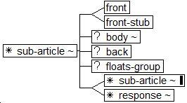
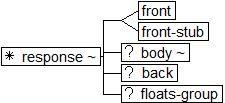
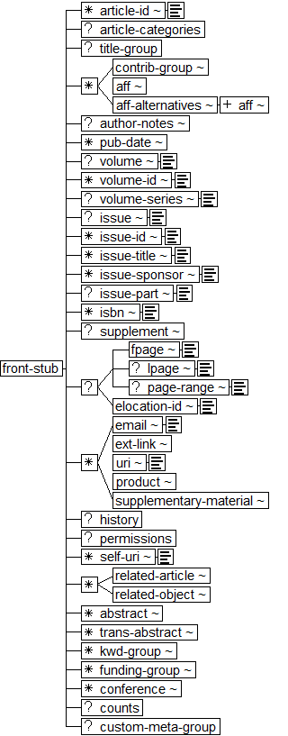

Journal Publishing Tag Library Proposed NISO JATS Version 1.0
National Center for Biotechnology Information (NCBI)
National Library of Medicine (NLM)
Sub-article and Response structures
Sub-article

Response

Stub Front Metadata
